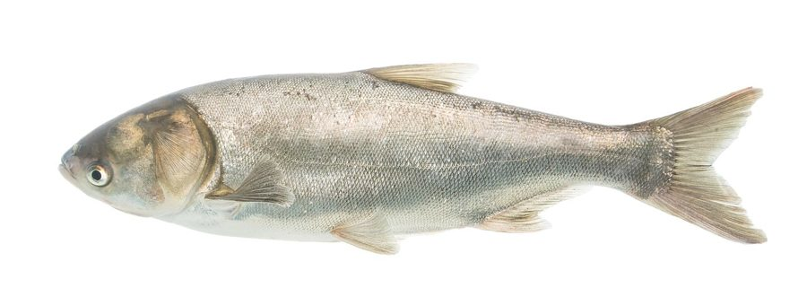

सिल्वर कार्पSilver Carp
Hypophthalmichthys molitrix · Cyprinidae · FSH-0029

- Scientific name
- Hypophthalmichthys molitrix (Valenciennes, 1844)
- Family
- Cyprinidae
- Hindi
- सिल्वर कार्प
- Local names
- silver carp, silver karp, chini carp, silvar carp
- Status here
- invasive
- IUCN
- LC
- Review
- audited and independently read
When to look कब देखें
Present all year.
सिल्वर कार्प / Silver Carp
Hypophthalmichthys molitrix (Valenciennes, 1844) — Cyprinidae
सिल्वर कार्प — चीन की विशाल मछली, 1970 के दशक में भारत लाई गई। तालाबों में प्लैंकटन खाती है। "मिश्रित मछली संस्कृति" में रोहू, कतला के साथ। कोई समस्या नहीं कहा गया, पर आहिस्ता-आहिस्ता देसी मछलियों को दबा रहा है। अगर नहर से निकलकर नदी में जाए तो संकट है।
Quick Identification त्वरित पहचान
| Feature | Description |
|---|---|
| Size | 20–40 cm in ponds (much larger in wild) |
| Body | Deep, compressed, streamlined; small head relative to body |
| Scales | Large, silvery-grey; shimmering |
| Mouth | Subterminal, toothless; gulper; eye low on head |
| Distinctive | Large size, streamlined shape, extreme sheen, eye position |
Field tip: A large, silvery, deep-bodied fish with a small head and a subterminal mouth. Exotic appearance; much larger than native cyprinids. Often jumps in water.
हिंदी: बहुत बड़ी, चाँदी जैसी चमकदार, पतला शरीर, छोटा सिर, निचली आँख।
Morphology आकारिकी
Biometrics (aquaculture populations):
| Measurement | Range |
|---|---|
| Standard length (cultured) | 20–40 cm |
| Weight (cultured) | 0.5–2 kg |
| Maximum recorded | up to 50 cm and 35 kg |
| Growth rate | 1.5–2 kg/year in ponds |
Structure: A filter feeder with a gill raker apparatus modified to trap plankton. No pharyngeal teeth. Mouth subterminal and can be opened wide to gulp water and plankton.
Behaviour & Ecology व्यवहार और पारिस्थितिकता
A surface and mid-water planktivore that filters zooplankton and phytoplankton. Schools in open water. Tolerates crowding and poor water quality (though growth suffers). Can leap out of water, sometimes explosively; a characteristic behaviour in aquaculture. Rapid growth rate is the basis of its introduction for aquaculture. Escapes from ponds during flooding and can recruit in rivers; once in river systems, competes with native fish and disrupts ecological balance. In the Brahmaputra and some tributaries of the Ganges, established wild populations now persist.
हिंदी: प्लैंकटन खाने वाली तेज़ी से बढ़ने वाली मछली। भीड़ सहती है लेकिन खराब पानी से घटती है। बाहर कूदती है। बाढ़ में नाली से निकलकर नदी में जाती है और देसी मछलियों से होड़ करती है।
Life Cycle / Phenology जीवन चक्र
| Stage / season | Event |
|---|---|
| Breeding | Monsoon; water-level and current dependent; rarely breed in ponds |
| Migration | Adults move upstream or into connected water bodies for spawning |
| Eggs | Released into flowing water; pelagic development; millions of eggs per female |
| Larvae | Drift downstream; feed on rotifers and phytoplankton |
| Fry, 3–4 weeks | Feed on copepod nauplii and small zooplankton; rapid growth in warm water |
| Juveniles | Reach 5–10 cm in first month; 20–30 cm in first year under optimal conditions |
| Maturity | 3–4 years in intensive culture; 5–7 years in extensive or wild conditions |
| Lifespan | 15–20 years recorded; maximum age in wild unknown |
हिंदी: बरसात में प्रजनन; अंडे बहते पानी में; लाखों अंडे एक मादा से; लार्वे बहकर जाते हैं; एक महीने में 5-10 सेमी; एक साल में 20-30 सेमी।
Host Plants or Prey आहार
- Zooplankton: Daphnia, copepods, ostracods, rotifers — filtered from water by gill rakers
- Phytoplankton: Algae and cyanobacteria suspended in water — bulk of diet
- Organic detritus: Small particles of plant and animal matter
- In aquaculture: Supplemented with formulated pellets and macrophytes
Predators / Natural Enemies शत्रु
- In aquaculture: Few; size and growth rate reduce predation by birds
- In wild rivers: Potentially large piscivorous fish (if native large catfish or snakeheads remain); predation on eggs and fry by smaller fish
- People: Harvested from aquaculture ponds and escape populations in rivers
Agricultural / Human Relevance कृषि प्रासंगिकता
Aquaculture benefit: In composite fish culture, silver carp is grown with rohu (Labeo rohita), catla (Catla catla) and grass carp (Ctenopharyngodon idella). Each occupies a different ecological niche (planktivore, detritivore, herbivore), maximising pond productivity. Silver carp production is significant in aquaculture.
Ecological risk: In natural systems, silver carp competes with native planktivorous fish (Indian River Shad, native cyprinids) and can suppress zooplankton biomass, affecting recruitment of native fish larvae that feed on same prey. Escapes during monsoon flooding are documented in Indian rivers. Once established, population control is difficult.
Documented effects from Indian fisheries literature:
- In Brahmaputra river system and floodplain waters, silver carp abundance correlates with declining native fish diversity
- Composite culture ponds show higher total fish yield but lower species diversity
- Recruitment of native fish fry is reduced in ponds stocked with silver carp due to plankton competition
Expected Locally स्थानीय रूप से अपेक्षित
Not a field record. Written from published accounts for eastern Uttar Pradesh. No confirmed local sighting yet — if you have seen it, that is what the atlas needs.
अभी तक स्थानीय पुष्टि नहीं। यह विवरण प्रकाशित स्रोतों से है, किसी अवलोकन से नहीं।
Hypophthalmichthys molitrix is to be expected in aquaculture ponds and tanks where it is stocked for composite fish culture operations throughout Basti and eastern UP. Its presence in wild river systems would be concerning; any sighting in natural flowing water or escapes from breached ponds should be reported.
Distribution वितरण
Global range: Native to China and Siberia; introduced worldwide for aquaculture.
In India: Introduced in the 1970s; now cultured in most states; established in some river systems.
In Uttar Pradesh: Widely cultured in composite fish ponds; escapes documented in some rivers.
In Basti / eastern UP: Expected in aquaculture operations; may be present in escape populations in rivers.
Research Questions शोध प्रश्न
Anyone can investigate these | कोई भी इन प्रश्नों की जाँच कर सकता है
- How many silver carp farms operate in the district, and what is annual production? / क्या एरिया में सिल्वर कार्प की मछली पालन है? — Survey all aquaculture sites; document stocking rate and yield.
- Is silver carp present in wild river stretches, and does it breed there? — Net surveys in river channels and floodplain water during monsoon.
- In composite culture ponds, does silver carp reduce recruitment of native fish fry compared to non-stocked ponds? — Compare netting results for native fry in control vs. treated ponds.
- What is the size/age structure of silver carp populations in farmed vs. escaped populations? — Measure and scale-read fish from ponds and rivers.
- What zooplankton taxa are suppressed by heavy silver carp stocking? — Sample zooplankton in ponds with different silver carp densities.
Similar Species मिलती-जुलती प्रजातियाँ
| Species | How to tell apart | हिंदी |
|---|---|---|
| Grass Carp (Ctenopharyngodon idella) | Darker colour; larger scales; terminal mouth adapted for grazing plants; no filter-feeding | गहरे रंग की, पत्तियाँ खाती है |
| Rohu (Labeo rohita) | Larger head; larger mouth; golden-bronze colour; not filter-feeding | बड़ा सिर, बड़ा मुँह, सुनहरा रंग |
| Big-head Carp (Aristichthys nobilis) | Very large head; upturned mouth; eats detritus and zoobenthos, not planktonic | विशाल सिर |
Field rule: A large, silvery, streamlined carp with small head, subterminal mouth, low-set eye, extreme sheen, and filter-feeding behaviour in ponds or aquaculture tanks = silver carp.
Taxonomy & Classification वर्गीकरण
Original description. Valenciennes, A. (1844) in Cuvier & Valenciennes, Histoire Naturelle des Poissons, vol. 16: 82. Type locality: China. Originally placed in Leuciscus, later transferred to Hypophthalmichthys.
Subspecies. Hypophthalmichthys molitrix (Valenciennes, 1844) is monotypic; no subspecies are recognised. The common Chinese aquaculture form is the basis of all global introductions.
Family and order placement. Cyprinidae, the carp and minnow family; order Cypriniformes. The genus Hypophthalmichthys contains two species: H. molitrix (silver carp) and H. nobilis (bighead carp). Both are Chinese endemics that have become globally invasive through aquaculture.
Phylogenetic notes. Hypophthalmichthys is nested within the larger Asian cyprinid radiation; its closest relatives are the Indian major carps (Labeo, Catla), with which it shares fundamental ecological and breeding characteristics.
IUCN status rationale. Least Concern. The population is expanding globally; the species is invasive in many regions but remains least-impacted at a global scale. In individual regions (e.g., Danube, Mississippi rivers), the species is of high conservation concern.
Photo Gallery फोटो गैलरी
Photos needed आवश्यक फोटो
- [ ] Adult silver carp in culture pond (तालाब में बड़ी मछली)
- [ ] Close-up of mouth showing gill raker filtering apparatus (मुँह और फिल्टर)
- [ ] School in open water (खुले पानी में झुंड)
- [ ] Comparison with rohu and catla (तीनों की तुलना)
No photos yet — add field photos to media/species/silver_carp/ and run node scripts/sync_photos.js.
References संदर्भ
- Valenciennes, A. (1844). Histoire Naturelle des Poissons, vol. 16: 82. F.G. Levrault, Paris. [original description]
- Day, F. (1878). The Fishes of India, vol. 1. Williams and Norgate, London.
- Talwar, P.K. & Jhingran, A.G. (1991). Inland Fishes of India and Adjacent Countries, vol. 1. Balkema, Rotterdam.
- De Silva, S.S. (ed.) (1989). Fish Culture in Farmland Aquaculture. Springer, Dordrecht.
- Dudgeon, D. & Welcomme, R. (2006). Freshwater biodiversity: importance, threats, status and conservation challenges. Biological Reviews 81(2): 163–182.
- GBIF Occurrence Data — Hypophthalmichthys molitrix, India (2026).
Source file: species/fauna/fish/silver_carp.md